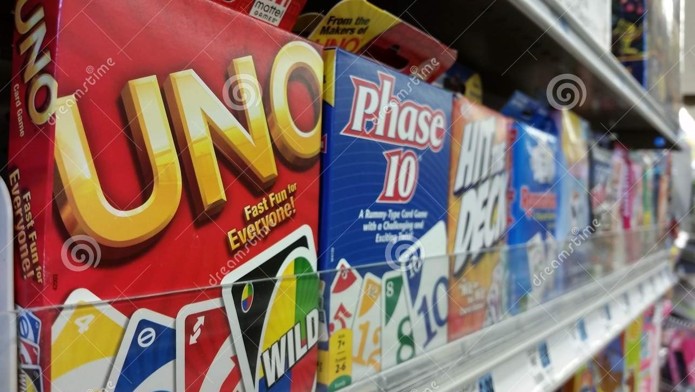
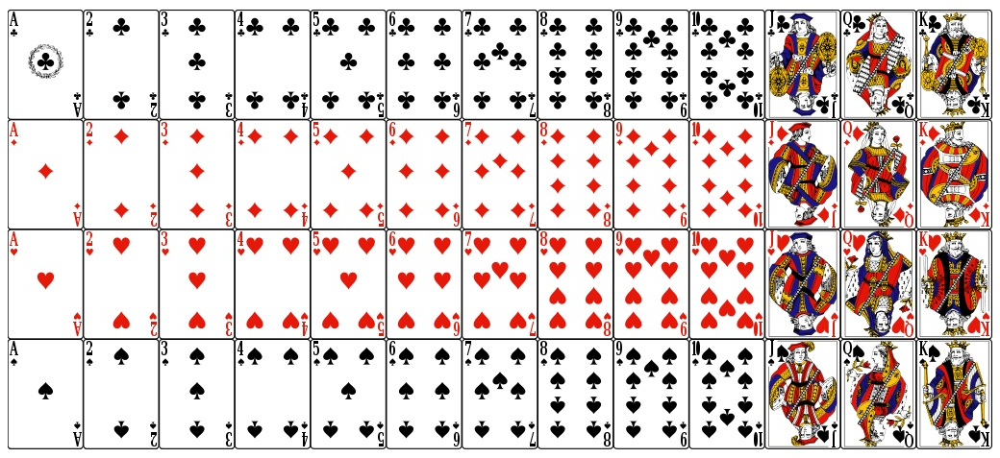
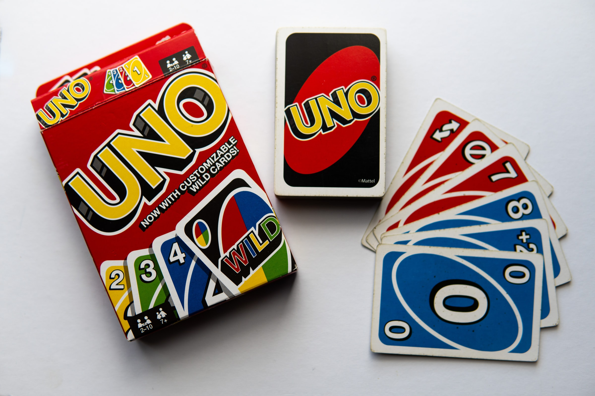

Welcome to The Vault!
There are so many card games out there and so many places to learn them from. Here we aim to make that a little easier. We will group these by category! We will create extensive lists and categories to house and contain all the various card games we have.
Royale/Casino Card Games
Royal Card games are some of the oldest card games in existence! There are so many and there are also so many packs of cards out there today. Royal card games date back to the 1300s! They've come a long way since then. Here are 3 tutorials for 3 games played with Royal/Casino cards:
UNO Games
Uno has become a fan favourite all accross the globe! From its invention in 1971, it has now been expanded into different version. Today there are many known types of UNO card games out there. Here is the tutorial for just 3 of those versions: